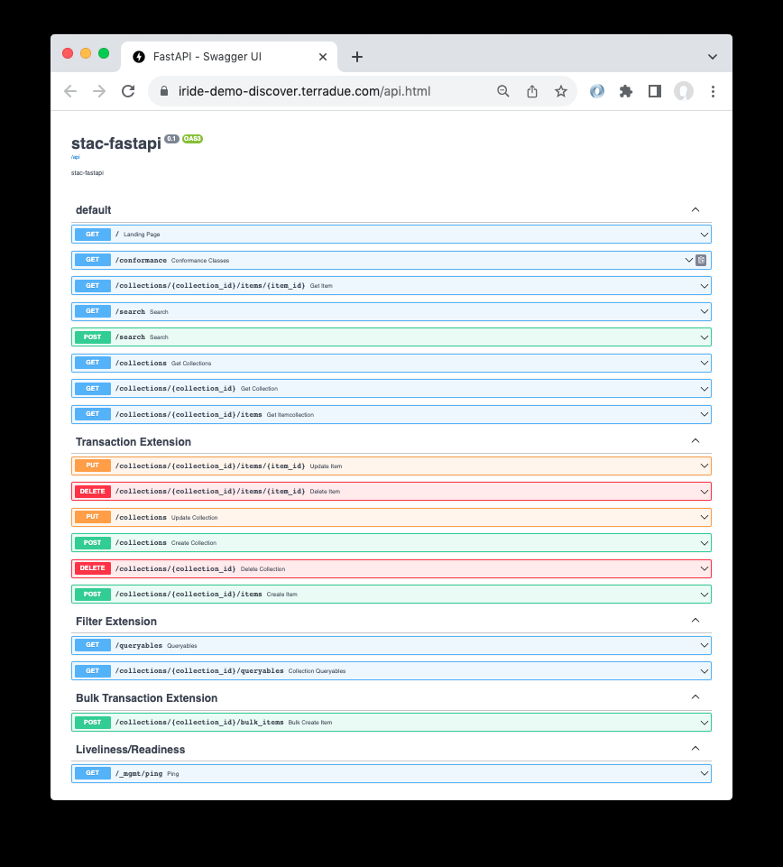
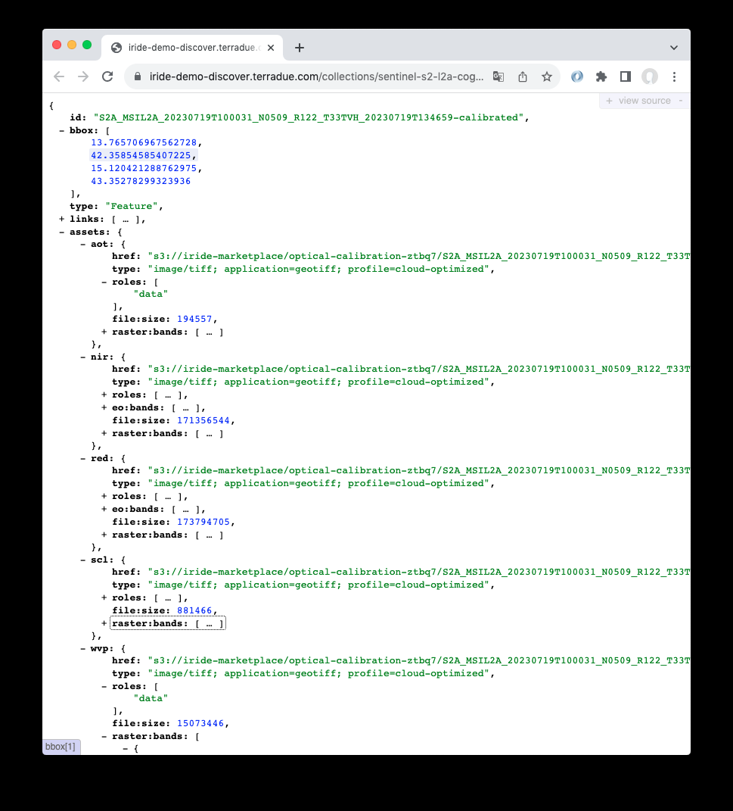

Catalogue API
La API STAC como interfaz REST de búsqueda: ejemplos de consultas temporales, espaciales, por cobertura de nubes y por misión, consultas combinadas, uso de CQL y la extensión Filter.
The platform utilises the SpatioTemporal Asset Catalog (STAC) API to optimise geospatial data accessibility. The API functions as a dynamic interface for users and systems to search and access the assets catalogued by STAC. Adhering to modern RESTful principles, the API facilitates interactions with STAC Items and Collections. By using this interface, users can perform real-time searches, refining their queries based on spatiotemporal parameters, specific asset types, or even custom metadata fields. It dramatically reduces the time taken to locate pertinent datasets, streamlining the entire data discovery process.

Here are some technical examples of how these queries can be structured:
- Temporal Queries: The STAC API allows users to search for assets within specific date and time ranges. For instance, a user can retrieve all assets captured between January 1, 2020, and December 31, 2020, using a query like:
GET /stac/search?datetime=2020-01-01T00:00:00Z/2020-12-31T23:59:59Z- Spatial Queries: Through the API, spatial extents can be defined using bounding boxes or polygons. A user could, for instance, search for all assets that cover a specific city using its bounding box coordinates:
GET /stac/search?bbox=-0.15,51.4,-0.1,51.6- Cloud Cover: Leveraging the extended capabilities of STAC, users can even filter assets based on atmospheric conditions. For instance, one could query for assets with a cloud cover of less than 20% like:
GET /stac/search?query=eo:cloud_cover<20- Satellite Mission Specific Search: To retrieve images only from a specific collection representing a specific mission or sensors, say Sentinel-2:
GET /stac/search?collections=[sentinel-2]
Furthermore, the true power of STAC API emerges when these queries are combined. As an example, a combined query could look for Sentinel-2 assets, over a specific region captured during 2020:
GET /stac/search?collections=[sentinel-2]&bbox=-0.15,51.4,-0.1,51.6&
datetime=2020-01-01T00:00:00Z/2020-12-31T23:59:59ZThe STAC API also leverages the Common Query Language (CQL) for advanced querying capabilities submitted as POST requests to the API. CQL is a query language standard by the Open Geospatial Consortium (OGC) designed for filtering vector features. When used in conjunction with STAC, CQL provides a powerful and expressive way to search for geospatial assets based on their metadata attributes. Using CQL with STAC API enhances the flexibility and precision of queries. For example, rather than just relying on simple key-value pair queries, with CQL you can incorporate logical, arithmetic, temporal, and spatial operators to form more complex search criteria.
Beyond just enabling search functionalities, the STAC API provides mechanisms for dynamic data filtering, pagination, and sorting, all tailored to present the most relevant results to a user's specific requirements. Furthermore, the inherent modularity of the STAC design allows for the definition and support of new extensions, ensuring adaptability to address emerging and specialised use cases. As the catalog grows and the use cases addressed by the platform evolve, the STAC API remains agile. This ensures consistent delivery of optimum performance, guaranteeing that users always have the best tools at their disposal for data discovery and access.
The Catalogue API can be further enhanced by integrating the STAC API - "Filter Extension Specification"6. This extension augments the capabilities of our Catalogue API, providing advanced filtering options for querying geospatial data.
This extension allows client applications to perform more complex queries on the catalog data. It supports filtering by various attributes such as spatial dimensions, time ranges, and specific properties of the geospatial data. This enables users to precisely locate the data that meets their specific criteria. By incorporating this extension, users can easily navigate through large datasets and find relevant geospatial assets. This not only improves the usability of the Catalogue API but also significantly reduces the time and effort needed to find the right datasets.